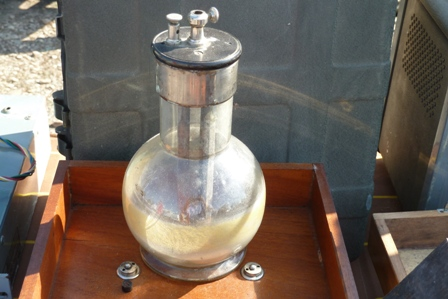
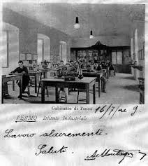

Anche oggi un po' di storia... la prossima volta metto mano alla vetreria, promesso!
Però non potevo far a meno di parlarne, visto la bella pila che ho fotografato: guarda una Grenet!... mi son detto mentre girovagavo per una famosa fiera-mercato.
Questa boccia di vetro da un paio di litri, il suo collo largo con il tappo di ebanite e i serrafili in ottone nichelato la rendono assolutamente inconfondibile.

Monsieur Eugene Grenet per la verità ha fatto un po' troppo il furbo, perchè è dal 1856 che si prende tutto il merito per aver dato il nome a questa pila, che in realtà era stata inventata già quattordici anni prima da Johann Christian Poggendorff; lui l'ha resa solo un po' più pratica, prendendosi pure un brevetto tre anni più tardi.
Come è fatta questa Poggendorff-Grenet?
Come si vede, è costituita appunto da una grande boccia di vetro come sopra detto.
I due serrafili che attraversano il coperchio sono collegati al di sotto in questo modo:
- quello laterale si collega a due spesse lamine di carbone spaziate un paio di centimetri e lunghe quanto basta per arrivare fino quasi al fondo del contenitore (di solito i serrafili positivi sono due, uno per lamina, ai lati di quello centrale negativo).
- quello centrale permette il passagggio attraverso il forellino di un'astina in ottone (mancante in questo esemplare) collegata inferiormente ad una lamina di zinco (anch'essa mancante) posta tra le due di carbone; in tal modo può essere immersa o estratta dal liquido elettrolita.
Essa viene immersa nella soluzione solo quando si vuole creare una differenza di potenziale ai morsetti, bloccandola nella posizione voluta per mezzo di quella vitina che si vede.
Lo zinco era amalgamato con mercurio per proteggere l’elettrodo dall’attacco dell’elettrolita a circuito aperto.
Questa pila, come quella di Volta, è un generatore ad un solo conduttore di seconda classe, cioè di una pila in cui la soluzione elettrolitica è una sola (conduttori di prima classe sono gli elettrodi metallici, di seconda la soluzione ionica).
La lamina di zinco è l'elettrodo negativo della pila e durante il funzionamento va via via consumandosi; gli elettrodi di carbone collegati in parallelo (polo positivo) sono invece inerti, cioè servono per trasportare gli elettroni, ma non subiscono alcuna reazione.
Poggendorff usava originariamente per la sua pila una soluzione di CrO3 (anidride cromica), un bel solido in scagliette rosse solubilissime in acqua: in pratica una soluzione di acido cromico H2CrO4.
Grenet sostituì questo composto, scomodo da ottenere puro, con una soluzione solforica di bicromato di potassio K2Cr2O7, che è poi la stessa cosa (l'anidride cromica si ottiene per azione dell'H2SO4 sul bicromato; è la separazione successiva della CrO3 pura che è difficile).
Cosa avviene all'interno della bottiglia, quando la lamina di zinco viene abbassata?
Come in tutte le pile avviene una reazione di ossidoriduzione:
3 Zn + 2 CrO3 + 12 H+ => 3 Zn2+ + 2 Cr3+ + 6 H2O
e più concretamente:
3 Zn + K2Cr2O7 + 7 H2SO4 --> Cr2(SO4)3 + 7 H2O + K2SO4 + 3 ZnSO4
Ecco spiegato come gli elettrodi di carbone non partecipino alla reazione (non si consumano), mentre la povera lamina di zinco deve ossidarsi prendendosi sulle spalle metà del lavoro e sciogliendosi lentamente nella soluzione come solfato di zinco ZnSO4.
L'altra metà del lavoro la fa la soluzione, che si riduce da -CrO42- a -Cr3+ e contemporaneamente si impoverisce di ioni H+.
Da essa emerge il fatto che sia la lamina che l'elettrolita subiscono un graduale degrado, e la pila si "consuma": da un bel colore rosso vivo, la soluzione tende ad assumere alla fine la colorazione verdastra caratteristica degli ioni cromo -Cr3+ e la lamina di zinco si assottiglia sempre più.
E riguardo la forza elettromotrice, cioè la tensione ai morsetti?
I potenziali redox delle semireazioni dicono che:
Zn --> Zn2+ = -0,76 V
-Cr2O72- --> Cr3+ = +1,23 V
il salto teorico totale è 1,99 volt, pienamente corrispondente con la realtà, che è intorno a questo valore.
La disposizione degli elettrodi, molto vicini e di grande superficie, unita al tipo di elettrolita, conferisce alla pila una resistenza interna particolarmente bassa e la rende quindi idonea ad erogare correnti molto intense, anche se per poco tempo.
Ricordo che la POTENZA elettrica di un qualsiasi dispositivo è data dal prodotto della tensione per la corrente, cioè dai Volt per gli Ampere (non è mai superfluo ripeterlo...).
I volt sono in genere "facili" da ottenere, gli Ampere no, e sono questi che contano in elettrotecnica!
Dov'erano usate queste pile?
Per quanto affidabili e capaci di produrre un'intensa corrente, le pile al bicromato sono andate in disuso verso la fine del XIX secolo perché tendevano a "scaricarsi" troppo velocemente, anche se lo zinco veniva inserito soltanto quando si voleva alimentare il circuito utilizzatore.
(Nel brevetto di Grenet si fa uso addirittura di aria soffiata sugli elettrodi come depolarizzante per aumentare l'efficienza, ma ciò riguardava grandi generatori, non il singolo elemento che trattiamo in questa sede).
Oltre che per i telegrafi e le poche cose che allora andavano a corrente, erano le pile ideali da laboratorio didattico, pronte ed affidabili e che per di più non emettevano gas durante il funzionamento.
E' vero che erano a base di inquinantissimi sali di cromo esavalenti, ma allora chi ci pensava a queste cose?
Rubo dalla rete (miniera inesauribile di ogni notizia!) questa bellissima cartolina fin de siecle, nella quale si vedono campeggiare sui tavoli di un'aula dell'Istituto Industriale di Fermo delle belle Grenet... pardon, Poggendorff!

Voglio concludere con una amara considerazione guardando la cartolina: allora non erano ancora arrivati i famigerati tagli e in classe si "lavorava" davvero... alacremente!
2 commenti